| 2002年1月31日
|
| 亞丁王國野生動物打獵特別日（續篇）
官方公佈了中咒的動物：
http://www.lineage.com.hk/lineage/lin_image/act_page/hunt/hunt_2.htm
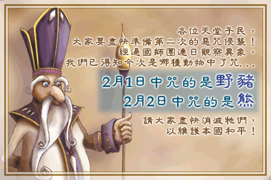
正如本網前天估計一樣，今次中咒的是野豬和未登場的熊。
|
| 2002年1月30日
|
| 恭喜發財！〈天堂〉派利是迎新歲！！
資料轉載自官方電郵文件：
〈天堂〉新年大派利是
嘩！還有一個星期就到農曆新年了！在此先向大家拜個早年，恭祝大家心想事成！在〈天堂〉路路亨通，天幣，level，道具……全部都可以極速進漲！
新年都可算是一年中最重要的節慶。有得玩，又有很多美味的賀年食品任君選擇，最重要當然是有利是逗啦！相信好多人都好期待這個日子，希望籍此為銀包庫存帶來突破！〈天堂〉的活動一向與時並進，你平時可以玩的做的，在〈天堂〉一樣可以有，而且過之而無不及。除了情人節會和大家大玩特玩外，新年亦不例外。〈天堂〉預備了團拜活動──「恭喜發財，利是逗來」和大家歡度這個喜氣洋洋的節日，而且還會大派利是呢！
在〈天堂〉團拜，誰逗得最多利是錢？
這個「恭喜發財，利是逗來」的活動是要大家在〈天堂〉都可以體驗新年的熱鬧。你只要在〈天堂〉與遊戲中的村民交談拜年，就有機會從他們手中逗得「利是」一封！
拜年越多，當然逗利是的機會相對也越多啦！好玩呀，這個團拜活動不用等年初一，由2月5日開始就有得玩，一直逗利是至2月11日。當你2 月12日(大年初一)再進入〈天堂〉時，你的利是就會就會變成利是錢──〈天堂〉幣了。不妨告訴你，每個人所逗得的利是錢也不同，乖的小朋友利是錢當然多些啦！想知道自己可逗得多少利是錢，就快點進〈天堂〉拜年了。
「天堂有情人」最後通碟，報名從速！
除了新年活動，大家不要忘記我們還有情人節情人節的活動──「天堂有情人」！你們報了名沒有？活動報名已由2月1 日開始，至2月10日截止，你可以和你的另一半於情人節當天參加〈天堂〉世紀大婚禮，亦可送他/她一張〈天堂〉的情人節咭，甚至是一隻可隨時傳送對方至身邊的「情人傳送介指」！如此精彩的活動，怎能錯過！如果你還沒有報名，就快點了！
新年及情人節活動詳情都已登於天堂官方網站 http://www.lineage.com.hk
，要下載免費天堂程式，亦可到以上網址下載，新玩家還可以得到免費試玩點數呢！
|
| 2002年1月29日
|
| 香港天堂情人節活動
香港天堂官方網站公佈了情人活動的詳情，內容和本網先前提及的差不多，有興趣者請參考以下連結：
http://www.lineage.com.hk/lineage/lin_image/act_page/valentine/valentine.htm
亞丁王國野生動物打獵特別日（編篇）
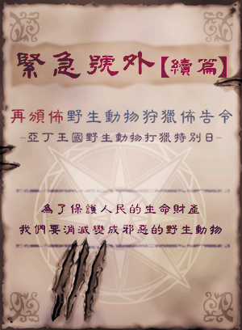
在2月1日及2月2日香港天堂將會繼續有野生動物狩獵活動，在殺死有關動物後將會有機會得到珍貴的道具，本網估計今次受遭殃的動物為野豬及未登場的熊，詳情請參考以下連結：
http://www.lineage.com.hk/lineage/lin_image/act_page/hunt/hunt_2.htm
韓國測試伺服器更新
今天韓國測試測伺服器更新用戶端20129版本，修正了English
Only會機的錯誤，現在如果將English Only開了的話將會過濾所有包含非英文的交談，另外在畫面上亦不會顯示說話框。
|
| 2002年1月28日
|
| 韓國測試伺服器更新
今天韓國測試伺服器有36個檔案更新，主要是加入農曆新年和情人節的特別活動物品，另外用戶端版本更新為20126，有關物品如下：

這些應該是煙花吧！估計在使用後會出現像無所遁形術的視覺效果。
恭喜發財，利是逗來！
情人信紙
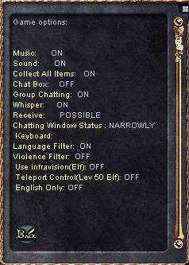
另外在切換英文語系後會有一個English Only的選項，在使用後只會看到英文字，不會顯示包含其他語言的交談，不過在使用時經常會當機。
而時間表更改為顯示遊戲中的時間，天堂遊戲的時間比現實快6倍，一天只有4小時。
|
| 2002年1月27日
|
| 情人節活動 - 情人信紙
圖片來自官方電郵：
在情人節當日（2月14日，年初三）大家可以在特定NPC上買到情人咭/信紙，送給你的摰愛！
|
| 2002年1月26日
|
| 韓國測試伺服器更新
韓國測試伺服器最近有20123及20125版本的更新，改動如下：
在選擇(Y/N)時，可以用滑鼠去選擇。

當滑鼠指在日夜狀態表時，會顯示自己電腦目前的時間。
另外20125版修正了20123版不能正確顯示\k \j \c後的字串錯誤。
天堂2(Lineage 2)的資料
原資料：Lineage
Playforum
http://community.playforum.net:8080/bbs/prog/column?action=read&iid=10051002&kid=1343
英文翻譯：Lineage
Compendium
中文翻譯：遊戲頻道
Project L2(Lineage 2)動畫下載： http://www.hklineage.com/lineage2.zip
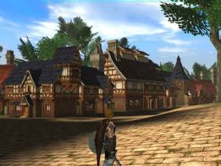 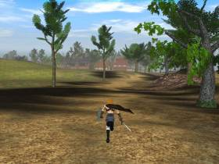
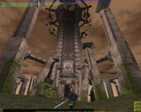
現今天堂的畫面已過時-許多玩家都希望自己的角色能夠特殊不再與別人長的一樣NC現已有計劃-會在今年內做出此改版-隨著角色的改變-許多背景也將會有不一樣的改變，這些改版會在韓版的第11章中出現。
然後在今年底-將會推出第12章-這將會是天堂第一世代的最後一章-會將遊戲帶入高潮，亞丁王國-亞丁會向其他的城收稅-亞丁城的城主將會是天堂中的霸主。
在明年2003-Lord British的世代會正式開始(天堂二)~從第13章開始-到18章-
這將由不一樣的製作小組負責-將會使用不一樣的遊戲引擎-在2003天堂會真正的變成
3d遊戲新的世代會在一個不一樣的大陸上充滿了國與國之間的戰爭(o.O....DAoC??)
製作小組保證遊戲並不會因為3d而lag-現有的物品將還可保存
(不懂他是說會有一樣的裝備....還是我們的東西可以帶過去?@@)
NC還有發現在美國的的市場反應並不理想-但每經過一個新的大改版-上線的人數就
加倍-所以希望這是個好現象
天堂二
天堂二使用unreal的遊戲引擎-有三個國家-18塊土地-將會有職業分別-與空戰(o.O)
今年六月左右會開始測試(不知道會不會開放測試?@@)
預計年底測試完畢-明年上市~
|
| 2002年1月25日
|
|
韓國測試伺服器加入了格鬥場活動 資料及圖片來自Playforum：
http://community.playforum.net:8080/bbs/prog/column?action=read&iid=10051004&kid=1338
韓國測試伺服器加入了格鬥場活動，玩家可以附1000金幣參加有關活動，這活動如卡瑞試煉般要和大量怪物戰鬥，而且還有積分排行榜！以下是有關的圖： 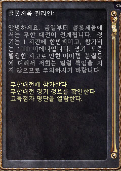
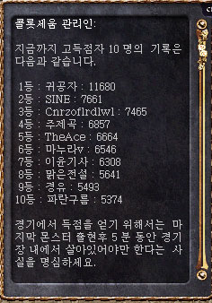 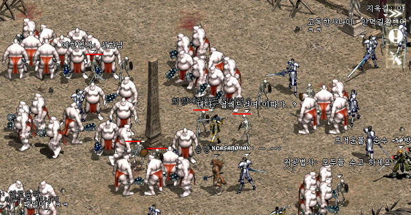 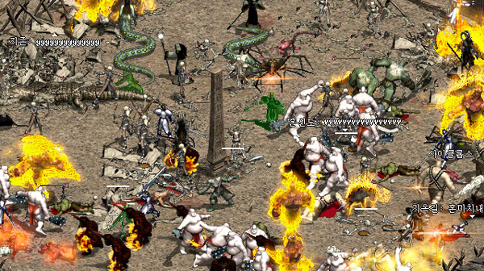 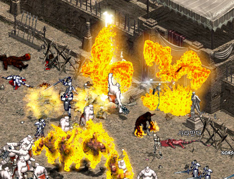 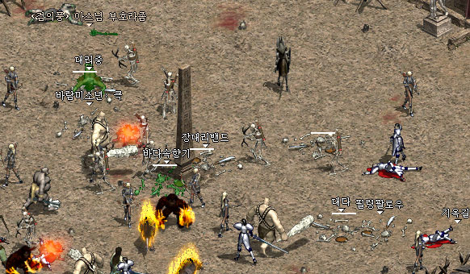
NCSoft和Sony Online Entertainment合作在亞洲架設EverQuest伺服器
NCSoft和Sony Online Entertainment將會合作在亞洲地區（韓國／台灣／香港）架設EverQuest遊戲伺服器，有關詳細內容請參閱以下連結：
http://www.verant.com/press/soe_ncsoft012302.html
http://www.lineage-us.com/nci/ncsoft_eq.html
韓國伺服器 - 等級58
圖片轉載自Lineage
Playforum，除了圖外還有一篇訪問：
http://community.playforum.net:8080/bbs/prog/column?action=read&iid=10051003&kid=950
本網按：你可能覺得加多三點落體質之上相當之笨，但你又知不知到體質21的騎士每下可以回1-9點血呢？
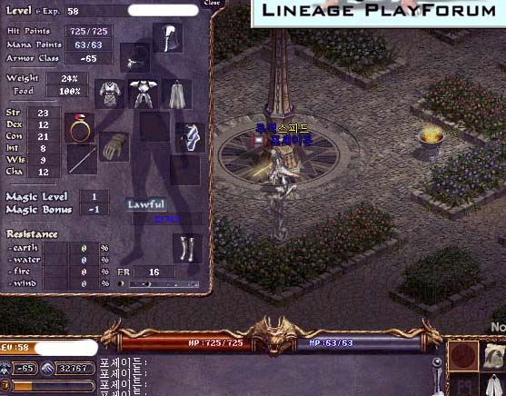
|
| 2002年1月24日
|
| 香港伺服器 - 情人介指！
以下資料來自官方電郵文件：
天堂有情人全力替你表白，為你創造獨一無異的情人節
今年情人節踏正大年初三，不知有多少店舖會開門營業，你想好要帶女朋友到哪裡沒有？無論如何，都記緊一定要上一上〈天堂〉！因為〈天堂〉已預備了豐富的情人節活動──《天堂有情人》讓你與她在〈天堂〉過一個獨一無異的溫馨浪漫情人節。如果你還未表白成功的，更加要趁這個節日上上〈天堂〉，用特別的方法給她製造更多驚喜！
驚喜一：首度登場天堂情人咭，神秘示愛夠新意
情人節第一關選禮物相信已令你煩惱不已！所謂「物輕情意重」，可能簡簡單單一張寫上你的心意的咭反而最討好。要特別一點的話，不妨送張「天堂情人咭」給女朋友(一般的e-card太行貨了)！〈天堂〉特意於今年情人節設計了一款精美的情人咭給大家，你可以在遊戲裡的商店買得到。情人咭上你可以寫上你的愛的宣言，並在收件人一欄寫上對方在〈天堂〉的名稱，這樣就可以把這張別具心思的咭傳到他/她的角色上，讓她知道你的心意！
驚喜二：至煞食示愛禮物──情人傳送介指
不要以為一張情人節咭就已足夠，這只是一個前奏而已。你還是要再想一份像樣的禮物的，這個就更難了！花、朱古力、介指相信是不少男仔的「情人節三寶」，怎樣才能特別點呢？不如送一隻「情人傳送介指」給她啦！這隻介指可以讓你的情人立即出現在你眼前。她需要你時，也可即時把你傳送到她身邊，利害吧？！「情人傳送介指」可在〈天堂〉中「訂購」。由2月1日起至2月10日，〈天堂〉官方網站
http://www.lineage.com.hk 內會公開讓大家申請這隻有錢都買不到的「情人傳送介指」。當然大家亦不需付出分文，你只要填好申請表，告訴〈天堂〉的工作人員為甚麼你想要這對介指，盡量寫得感人，溫馨，工作人員就會選出寫得最好的參加者送一對介指給他和他的情人。之後還會將得獎者的愛情故事放在〈天堂〉網站公開給人瀏覽，羡煞旁人！試想若你的男/女朋友看到你們的愛情故事公告天下，可真是威到盡了！
---介紹佢玩天堂，贈你珍貴「情人傳送介指」
相信很多人都對這雙「情人傳送介指」十分有興趣！很想要但又怕抽不中你？……還有一個辨法，就是參加已推出的「推！推！推！馬拉松活動！」，這個活動主要是玩法是鼓勵大家推薦身邊的朋友一起玩〈天堂〉。現在只要你是〈天堂〉點數制(不包括正在使用免費試玩點數的玩家)或月費制用戶，然後介紹你的另一半玩〈天堂〉，你們便可以拿到一雙「情人傳送介指」了，作為介紹人的你，還可以得到20點〈天堂〉時數呢！
你的男/女朋友可在新開帳號拿得免費試玩點數40點。當他試玩完畢，他可購買80點時數咭，於首次用80點時數咭增值並成功一次過轉移80點時數至其〈天堂〉帳號時，系統會要求他輸入推薦人的帳號，只要著他/她於此欄填上你的帳號就可以了。
終極驚喜三：別開生面online婚禮，勁?！
送完禮就都要想節目了！過年時份真是沒甚麼地方可去，行街、睇戲、食飯也顯得沒甚麼新意。〈天堂〉今年連節目都幫你想好(唔係掛!?@@)，就玩結婚啦！記得〈天堂〉推出時打著旗號說「做你平時唔敢做?」，看來真的沒錯，連婚禮也被工作人員放到RPG中，真是十分有創意！這個世紀大婚禮會於情人節2月14日晚上9 時至10時於〈天堂〉舉行(食完飯剛好)，到時遊戲內的Game Master (GM)會充當主婚人，為大家主持婚禮及以魔法表演祝賀新人！
要給婚當然要「排期註冊」啦！登記註冊日期為2月1 日至2月10日，你只要在〈天堂〉遊戲內寫封「登記註冊信」給GM ，信紙可在遊戲內的商店購買，收件人填上GM就得。信內告訴他們你想和誰(他/她〈天堂〉的角色名稱)結婚，你們有多恩愛，總之將你們極盡肉麻骨痺的愛情故事寫下來，寄給GM，他們就會選出最甜蜜的情侶參加這個最大型的ONLINE GAME婚禮，相信你的男/女朋友也想不到你這樣有心思了吧！
相信這樣的安排再由你加以發揮，這個情人節一定非常精彩了！祝大家《天堂有情人》終成眷屬！要帶你的情人上天堂，快點到
http://www.lineage.com.hk 下載免費的遊戲程式，有免費時數送啊！
新怪物的動畫圖
圖片轉載自Nue's
Lineage：
另外還有新魔法冰箭(Ice Dagger)和風刃(Wind Cutter)：
| 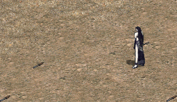
冰箭 Ice Dagger |
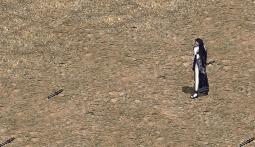
風刃 Wind Cutter |
|
| 2002年1月23日
|
| 韓國伺服器攻侏儒城及龍鱗甲的圖
有關的資料可以參考Lineage
Playforum：
http://community.playforum.net:8080/bbs/prog/column?action=read&iid=10051003&kid=943
http://community.playforum.net:8080/bbs/prog/column?action=read&iid=10051003&kid=944
韓國測試伺服器火龍鳳凰的圖
來自Jogga
Lineage，按圖放大：
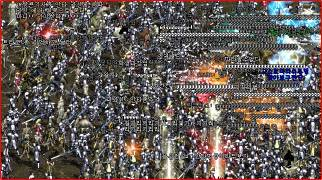
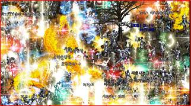
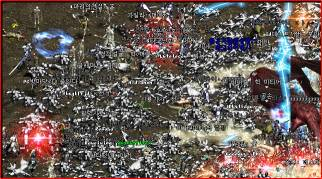
|
| 2002年1月22日
|
| 香港天堂 - 推！推！推！馬拉松活動
今天香港天堂正式實行"推！推！推！馬拉松活動"，簡單來說每當介紹一位朋友來玩天堂，在他第一次增值時就可以填寫推薦人的帳號，推薦人就可以得到20點天堂點數。有關詳情請參閱官方網站的報導： http://www.lineage.com.hk/lineage/events/cd_announcement/networkMkt.htm
|
| 2002年1月21日
|
| 美國測試伺服器新怪物 - 會放落雷的骷髏
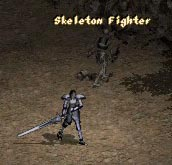 
美國測試侵服器出現了會放落雷的骷髏，不過它們只是新手怪物，它們在隱藏之谷出現，太約兩三刀便會死。
|
| 2002年1月20日
|
| 韓國伺服器格鬥場有趣的圖
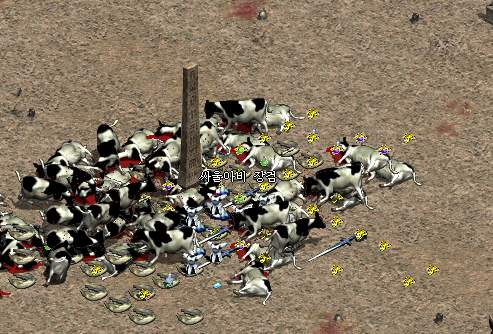
網主懷疑自己是否看到Diablo 2的牛牛圖 :P，除此以外還有火龍
VS 水龍 VS
地龍及其他頭目的圖，有興趣請看以下連結（來自Lineage
Webszone）
http://www.webszone.com/zboard/view.php?id=reporter_news&no=10
http://www.webszone.com/zboard/view.php?id=reporter_news&no=11
|
| 2002年1月19日
|
| 香港伺服器活動 -
野生動物打獵特別日
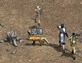 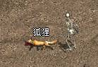
今天香港伺服器繼續有野生動物打獵特別日活動，目標為未登場的新動物狐狸，它們明顯地比昨天的鹿會掉更好的道具，包括有祝瞬卷、變卷、復卷、紅防、白防、祝防、紅武、白武及祝武。
|
| 2002年1月18日
|
| 美國測試伺服器新怪物 - 巨人(Giant)
資料翻譯自Lineage
Compendium：
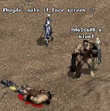
美國測試伺服器出現了新怪物巨人（Giant)，它主要是出現在風木村東方的沙漠中，它的等級為19，330HP，10MP。會掉金幣、紅水、木棒、大盾、戰斧、手套等道具。巨人的攻擊大約會造成10-20點傷害。
韓國測試伺服器召喚的時限增加至2小時
資料翻譯自Lineage
Playforum：
http://community.playforum.net:8080/bbs/prog/column?action=read&iid=10051004&kid=1298

日本天堂官方網站公佈了伺機服正式運作日期及收費詳情
有關詳情可以參閱日本天堂官方網站：
http://www.lineageonline.jp/release/index.shtml
開始登錄日期為2002年1月23日10時，而伺服器運作日期為2002年2月12日0時，收費為每30天1400日圓，約為84元港幣。
台灣天堂官方網站關防武卷的補充
台灣天堂官方網站在有關卷軸的介紹中加入了以下的補充：
在超出安定值的武器/防具上才會有可能產生+0的現像，且機率不高。
香港伺服器活動 - 野生動物打獵特別日
香港伺服器今天舉行了野生動物打獵特別日，今天受到魔咒影響的動物為鹿，據公頻得知會掉金幣，肉，瞬卷，變卷，復卷，防卷和武卷等道具。明天的獵物為未登場的新動物狐狸，聽GM說可能會比今日掉更好的東西！
本網更新了版面
今天本網更新了版面，而本網其他部分亦會陸續更新，由於時間問題有關今天的天堂新消息暫時後押更新，簡介如下：
1. 美國測試伺服器出現了新怪物巨人(Giant)。
2. 韓國伺服器第七級魔法召喚的時間由1小時增加為2小時。
3. 日本天堂伺服器公佈了正式開放日期及收費詳情。
4. 台灣伺服器有關防武卷的補充，+0的可能只會出現在過了安定值的裝備。
5.
香港伺服器今天舉行了野生動物打獵特別日，目標是鹿，好像會掉復活卷軸，防卷和武卷等珍貴道具。
|
| 2002年1月17日
|
| 台灣伺服器 - 防卷武卷齊加零
台灣伺服器好像是為了增加遊戲難度，繼在水之城推出後無聲無色地將防武卷漲價後（台灣伺服器在10%稅下防卷為4萬天幣），又無聲無色地將白祝防武卷增加+0的可能性！
資料轉載自台灣天堂官方網站：
|
|
對武器施法的卷軸 |
-- |
普通的：永久性增加武器攻擊力0~1
祝福的：永久性亂數增加武器攻擊力0~3
詛咒的：永久性減少武器攻擊力1 |
|
|
對盔甲施法的卷軸 |
-- |
普通的：永久性增加防具防禦力0~1
祝福的：永久性亂數增加防具防禦力0~3
詛咒的：永久性減少防具防禦力1 |
香港伺服器活動 - 亞丁王國
野生動物打獵特別日
香港伺服器又有新活動了，在1月18日至1月19日，及2月1日至2月2日，指定的動物會受到咒語形響而失去理性，殺掉他們會跌出價值不菲的道具，和十二月初韓國伺服器舉辦的活動差不多，本網估計有關動物可能會跌珍貴的卷軸如防卷和武卷，有關詳情請參考香港天堂官方伺服器的介紹：
http://www.lineage.com.hk/lineage/lin_image/act_page/hunt/hunt.htm
|
| 2002年1月16日
|
| 奇岩格鬥場的非格鬥區
資料翻譯自Playforum：
http://community.playforum.net:8080/bbs/prog/column?action=read&iid=10051004&kid=1288
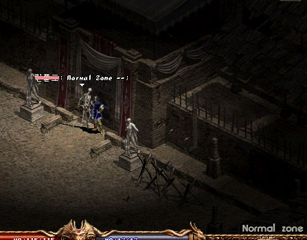
在奇岩格鬥場中上方出口附近有幾格是普通區域（白區），假如玩家在那裡被殺將會掉經驗值和道具，同時殺人者亦會變紅，大家要注意和小心。
|
| 2002年1月15日
|
| 韓國測試伺服器兩項更新
資料翻譯自Playforum：
http://community.playforum.net:8080/bbs/prog/column?action=read&iid=10051004&kid=1286
1. 當法師在Lag的狀態下出地裂術時，效果不會在同時間累積，直接點來說玩家不能用拔線法出地裂術來秒殺玩家。
2. 在脫下隱身斗篷後不能拾取道具及攻擊的時間由3秒加長為5秒。
|
| 2002年1月14日
|
| 精靈餅乾的效用解說
資料翻譯自Lineage
Compendium：
在韓國測試伺服器第十章推出之前已經有可以幫妖精再度加速的精靈餅乾，以下是有關精靈餅乾測試：
-
如果兩個妖精都是用劍，不論服用了精靈餅乾與否攻擊速度都是一樣。
-
如果兩個妖精都是用弓，當其一方用了綠水，而另一方用了綠水加精靈餅乾的話，攻擊速度會快11%。綠水狀態的妖精一分鐘可射75箭，而綠水加精靈餅乾則一分鐘可射83箭。
|
| 2002年1月13日
|
| 遊戲選項全開啟
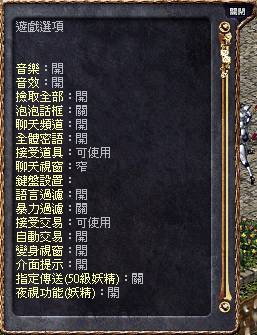
遊戲全選項開啟檔案： http://www.hklineage.com/optiong-c.zip
鳴謝Supp提供檔案，在解壓後請將檔案放在天堂的Text目錄下，如C:\Program
Files\Lineage170c\Text\。
新遊戲選項說明如下：
接受交易：若設為"不能使用"將會自動拒絕任何交易，不必打"n"。
自動交易(autotrade)：功能未明，如果有發現請電郵給網主。
變身視窗：在變身時會否出現變身視窗，如果設為"關"玩家需要自行輸入怪物名稱。
介面提示：當滑鼠放在遊戲介面上一會兒時，會否顯示指示小視窗。
指定傳送：妖精在等級50或以上時是否使用指定傳送功能。
夜視功能：是否開啟妖精的夜視功能，只適用於較新的遊戲版本（20104或更新），地面及洞穴皆有效。
|
| 2002年1月11日
|
|
韓國測試伺服器更新
韓國測試伺服器更新了5個檔案，用戶端更新為20111，並且加入了MConfig.exe程式來選擇以Midi或MP3檔案來播放背景音樂，此外亦更新了等級51或以上可以提昇一點能力值的獎勵。
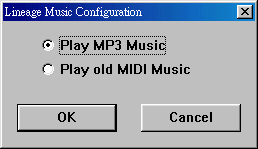 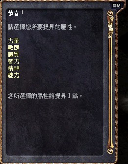
香港天堂官方網站更新了影音館
香港天堂官方網站更新了影音館，內有天堂漫畫，短片和音樂下載，其中的漫畫更是官方翻譯的中文版！
香港天堂影音館： http://www.lineage.com.hk/lineage/lineage_Gallery.htm
|
| 2002年1月10日
|
| 香港伺服器活動 - 同GM捉迷藏
這是一個給新手（等級９或以下）的活動，只要你在指定時間在歌唱之島或隱藏之谷打怪，便有機會獲得由GM放在怪物上的信紙，在找到GM後便可換取禮物，有關詳細內容請參考：
http://www.lineage.com.hk/lineage/lin_image/act_page/hide_n_seek/hide_n_seek.htm
韓國正式測服器更新後消息
網主又懶得更新了，有關資料可以參考：
寶嘉康蒂網站： http://elf.24cc.cc
這是一個非常出色的天堂網站，經常有獨家消息發佈！
韓國測試伺服器更新
韓國測試伺服器的用戶端版本更新為20109。
|
| 2002年1月9日
|
| 官方終於公佈了不能增值問題的解決方法
天堂假卡事件經過了差不多數星期，香港天堂官方終於承認有部分點數卡不能增值，並在其官方網站上公佈了解決方法，內容如下：
GD2S點數卡儲值問題說明!!（1月10日的版本）
近來接獲玩家反映有部份天堂點數卡無法於GD2S網站增值,目前問題已全部排除玩家可以先依照以下的處理方法，先行處理:
1. 持有無法增值之天堂GD2S點數卡，但尚未寄到本公司的玩家，可以先試著增值看看!
2. 己經將無法增值的天堂點數卡寄到本公司的玩家,請先把你身邊保留的點數卡影印本，先試著增值看看!!
以上處理方法如仍無法增值,請與本公司客服人員聯絡(客服專線2893-6288),
感謝各位玩家對天堂的支持,在此期間造成之不便,本公司深感抱歉!!
（1月9日的版本)
親愛的玩家:有關本次點數卡無法增值問題,已經證實並非外傳之偽卡,請各位玩家放心,所有無法增值之點數卡請玩家在本星期五(01/11)之後可再次以原上線密碼嘗試儲值,造成玩家不便,請各玩家見諒!!
本網按：正如本網先前推測一樣，有關假卡事件全是由於香港遊戲橘子數位科技股份有限公司方面的出錯，而非有人製造假卡。
天堂將會推出Mac平台版
資料翻譯自美國天堂官方網站：
http://www.lineage-us.com/news/item90.html
天堂(Lineage)將會在2002年首季推出Macintosh（蘋果電腦）平台的版本，主要是設計給Mac
OS X
10.1系統，Beta測試將會在不久推出，相信他們會在Macintosh
Expo上展示這全球最多人玩的線上遊戲。
韓國正式伺服器今天將會更新Episode
X: Lair of Valakas（火龍之巢穴）
資料翻譯自韓國天堂官方網站：
https://secure.lineage.co.kr/new_announcement/update/read.asp?ListNum=89&PageNum=1
韓國正式伺服器將會於1月9日更新Episode X: Lair of
Valakas，有關詳情如下：
1.
新增版圖，位置為奇岩左上及龍谷右上，內有新村落Werldern
Town，新城堡Iron Gate Guild（鐵門公會，即侏儒城）及新洞穴Lair
of Valakas（火龍之巢穴），有關侏儒城的攻城方法和目前的城堡一樣。
2. 在侏儒城中將會有新NPC製造日本劍及龍鱗片。
3. 在Lair of Valakas（火龍之巢穴）中有火龍。
4. 在火龍之巢穴將會增加以下NPC：（和之前公佈的資有點出入）
| 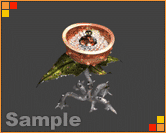
Bomb Flower 等級 17
它會將炮台一樣攻擊，但不會動 |
Ashitagio 等級22
它會像摔角般雙手輸流攻擊 |
|
Dragon Fly 等級20 |
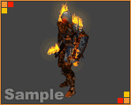
Burning Armor 等級27 |
|
Burning Archer 等級27 |
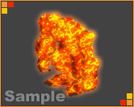
Lava Golems 等級33 |

Horn Cerverus 等級35 |
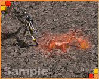
Salamander 等級40
強烈的尾針攻擊 |
|
Ifrit 等級40
火球攻擊 |
Phoenix 等級47
特殊的火球攻擊，可以一次過攻擊五個目標 |
5. 王族可以租奇岩城的格鬥場。
6. 在旅館和格鬥場中不可以交換鑰匙或入門卷。
7.
在說話之島及古魯丁的洞穴將不能夠標記，而目前有關位置的書籤將會刪除，即是日後不能在任何洞穴標記。
8. 地龍及水龍回來了，他們的人工智能加強了很多。
9. 妖精站在世界樹旁時將會更快回復魔力。
10. 有關魔法體力回復術的錯誤修正了。
11. 巴風特在出現的時候會立即將所有玩家傳送回2/F大廳，包括站在房間中央的玩家。
12. 修正及改善了部分臭蟲和文字描述。
|
| 2002年1月8日
|
| OK便利店亦出現假點數卡
繼7-11便利店後OK便利店亦出現了不能使用的點數卡（假點），據了解有關點數卡的密碼印得比較馬虎，而且是新一批貨來的。
韓國測試伺服器更新
韓國測試伺服器又有數十檔案更新，遊戲用戶端版本更新為20107。而在數小時後又有更新檔，版本為20108，在20104之後的版本中妖精的夜視功能完全取消了，即使在洞穴內亦沒有夜視效果。
|
| 2002年1月7日
|
|
GM對於假點事件態度惡劣！
以下內容轉載自 news://news.3home.net/3comp.pcgames.lineage
：
我 講 完 呢 句 過 左 二 十 秒 左
右，比 GM 禁 左 言，途 中 因 公 頻 去 得 太
快，令 我 唔 可 以 連 住 cap
之 後 我 轉 char 同 GM 講，佢 仲 扮 傻
打 "???"，跟 住 我 一 路 鬧 佢，但 未
獲 回 應！
呢 d 叫 咩 態 度？係 咪 講 左 句 對
佢 公 司 不 利 既 野 就 要 "kum" 住 我
把 口？咁 同 共 產 黨 有 咩 分 別？
網主按：閣下可能認為GM只須理會遊戲中的事件，對於假點事件無須負責，但本網認為GM有責任去幫助玩家解決問題，包括帳號上的問題，即使可能和GM的職位無關，但GM應該提供玩家正確的方法去聯絡有關人員，而非用禁言這種方法去停止玩家投訴或詢問有關假點問題。
|
| 2002年1月6日
|
|
不能使用的點數卡（假點）的資料
鳴謝tsvictor提供資料，如果大家買了假點卡一定要看看！
嗯~看了你網後一些關於假點的消息 ~
有些資料說給你知 ~
你也可能已知道吧 ~
真點的咭後的銀色物料是分為 5
格的，而且很易弄掉，弄掉後通常都不會有污積，上線密嗎很整齊，字與字之間空格較假的大。假點咭後的銀色物料很難弄掉，弄掉後會有污積，上線密碼的字體很粗糙，不整齊，還很密。
在咭的上線密碼下面有一個叫做咭序號的東西，真點咭的序號字體會較細，較梳，假點的字體較大，密一點
~
另外我也有聯絡過客戶服務部，那邊說只要寄上假點咭於客戶服務部，以及程上GD2S的帳號，於那一間店買到那一些點咭，他們就會大約三日後會幫你增加點數於天堂中，那時是星期三晚上，他說只要到星期五就可以入到點數給你
~ 可惜~ 還未 ~
我諗是寄信上需要時間吧，那我現在為有等消息了 ~~~~~
|
| 2002年1月5日
|
| 韓國測試伺服器更新
今天韓國測試伺服器更新了52個檔案，大部分都是NPC對話交談檔，主要是加入了租奇岩格鬥場的NPC的對話，另外用戶端程式更新為20104。
而在今次的desc-e.tbl描述檔案中，新增了以下項目：
| 新敵人 |
新魔法 |
侏儒城 |
其他NPC |
道具 |
Death
Ghost
Lava Golem
Fire Warrior
Ifrit
horn cerverus
phoenix
fire egg
bomb flower
fire bowman
dragon fly
astagio
Valakas |
(ice dagger)
(wind cutter)
(fire arrow)
(stalac)
(frozen cloud)
(earth jail)
(cone of cold)
(sun burst)
(earth quake)
(fire storm) |
dwarf king
dwarf master
dwarf smith
dwarf burden
dwarf guard
iron door
Iron Guild
Outer Eastern Gate |
orc santa
Potempin
Ivelviin
Pellto
Berry
Ralf
Leslie
Cove
Gavin
Daley
Atara
Freckson
Axellon
Colosseum Manager |
Amulet of Silver Serpent
Silver Serpent Scale
Christmas Card
map:Valakas' Lair
Ashitagio's Ash
Arena Entry Ticket |
|
| 2002年1月4日
|
| 香港天堂假點數卡事件跟進
鳴謝各熱心的玩家提供資料，以下是有關香港天堂假點數卡事件的要點：
1.
暫時所有不能使用的點數卡（以下稱為假卡）的來源是7-11便利店，當然這可能因為大部分玩家都在7-11買點數卡。
2.
假卡和真卡在表面沒有分別，另外有玩家覺得假卡上的上線密碼印得比較粗糙。
3.
有玩家發覺假卡上是沒有鐳射貼紙（本網按：在真卡上亦沒有鐳射貼紙，不過在包裝卡紙上是有的）
如果大家買了不能使用的點數卡，請打電話28936288興天堂客服聯絡，不過聽閒要將假卡寄回或親身拿上香港天堂的公司，還要等兩個星期呢！
本網猜想今次假卡事件是由於部分上線密碼在印出後忘記加入在GD2S系統的資料庫中便流出市面，而並非有人製造假的點數卡。
另外本網亦興遊戲中的GM詢問有關假卡事件，以下是對話內容：
本網：你好，我是hklineage.com的網主，可否問一些關於7-11賣假卡的問題
GM：請講
本網：最近本網接到很多玩家在7-11買了點數卡，但卻不能使用
GM：THEN?
本網：請問這是甚麼問題呢？是否有人製造假卡去賣？
GM：請明日致電客服中心詢問,28936288
GM：我們已經有專員處理這個問題的
本網：多謝你的回覆，我們會將你的對話放上HKLineage.com
GM：若您有甚魔可以關於點數卡的問題,也可以提供給他們.我會查 澳 p p姿（亂碼）
GM：謝謝您的意見 ^^
|
| 2002年1月3日
|
|
香港天堂假點數卡事件
最近不斷收到有網友買到了假的天堂點數卡，即是號碼不能使用，如果你可以提供詳細的資料，如假卡圖片，請電郵往
info@hklineage.com 。
|
| 2002年1月2日
|
|
伺服器方面的Bug
如果大家有玩召喚的法師或養寵物，都會發覺從2001年12月31日開始寵物在隨轉後入牆或面壁的機會大增，本網猜想伺服器在當天應該有一些改變，然而卻帶來不良的效果。
|
| 2002年1月1日
|
| 天堂新年齊倒數！
在0:00各大村落中皆有大量玩家一起倒數迎接2002年的來臨！以下是奇岩城的情況，比攻城時更為狀觀呢！
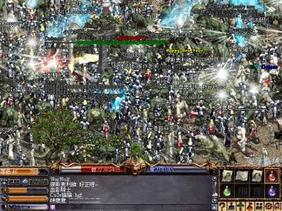
其後當然是洗公頻，連GM也一起洗 =.=
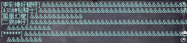
到最後各GM祝各玩家新年快樂及進步！
另外，天堂亦舉行了打怪拿藍水的跨年活動，在12月31日11:30pm至1月1日11:30pm其間，哥布林、葛林及狼人將會有機會掉珍貴的藍水藥水，可以補約50-70魔力！不過似乎真的很珍貴，因為網主打了兩小時只得到兩支。
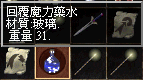
|

{kind=link}
{kind=link}
{kind=link}
{kind=link}
{kind=link}
{kind=link}
{kind=link}